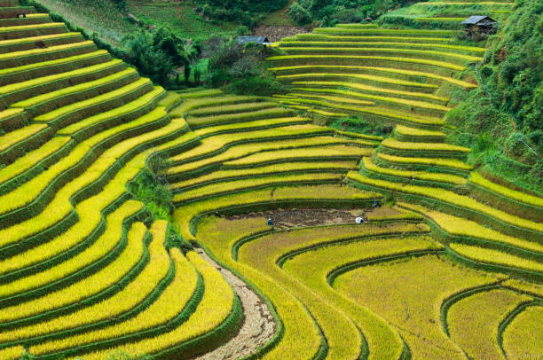
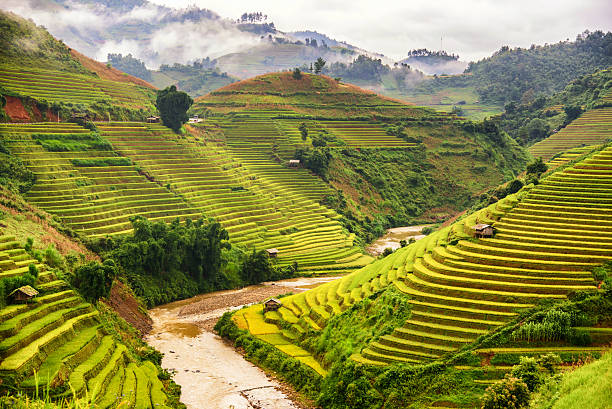

History of Banaue
Banaue is a municipality in the Ifugao province of the Philippines known for its ancient rice terraces carved into the mountainsides. These terraces are believed to have been built over 2,000 years ago by the indigenous Ifugao people using only hand tools.
The Banaue Rice Terraces are often referred to as the "Eighth Wonder of the World" and are a UNESCO World Heritage Site. They are a testament to the ingenuity and skill of the Ifugao people, who created a sustainable farming system in the rugged terrain of the Cordillera Mountains.



Watch a Video of Banaue Rice Terraces
Learn more about the Banaue Rice Terraces by watching this video by National Geographic: